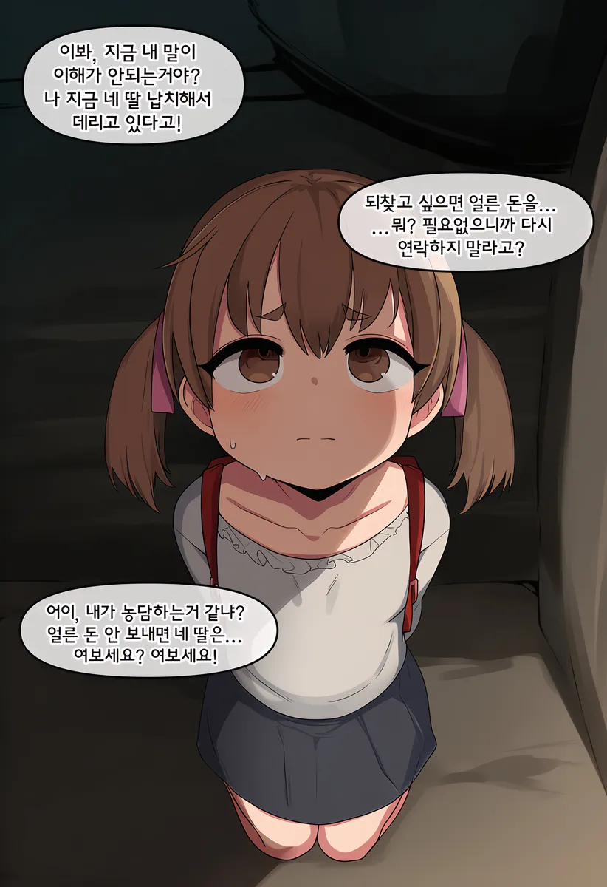
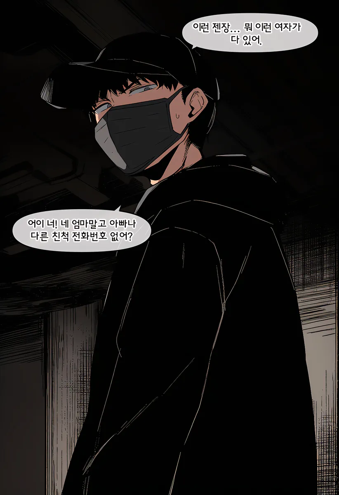
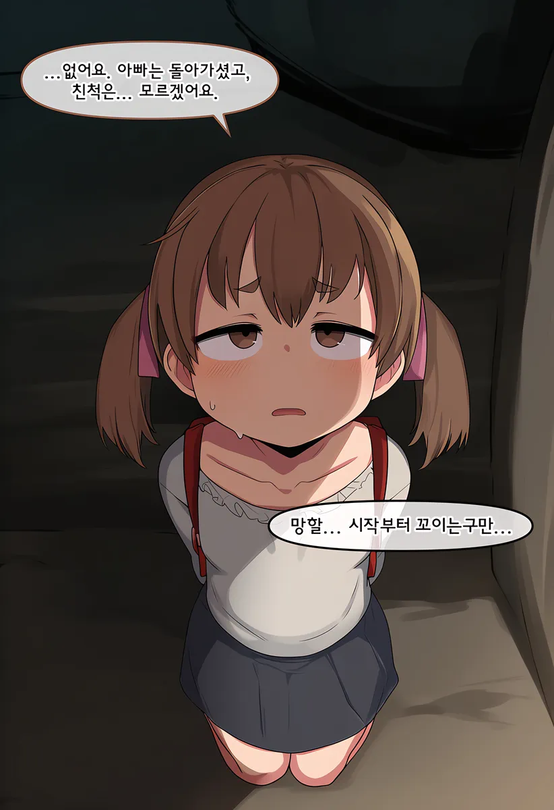
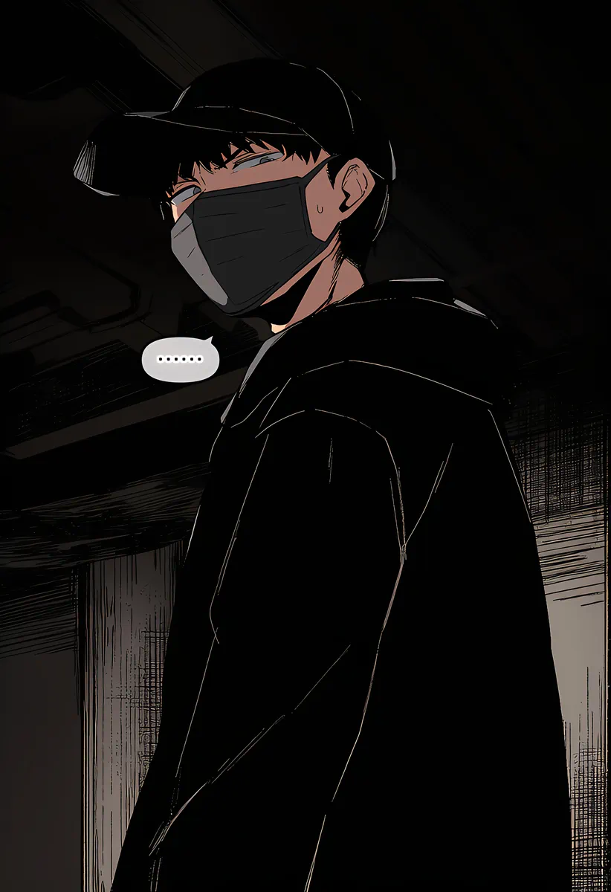
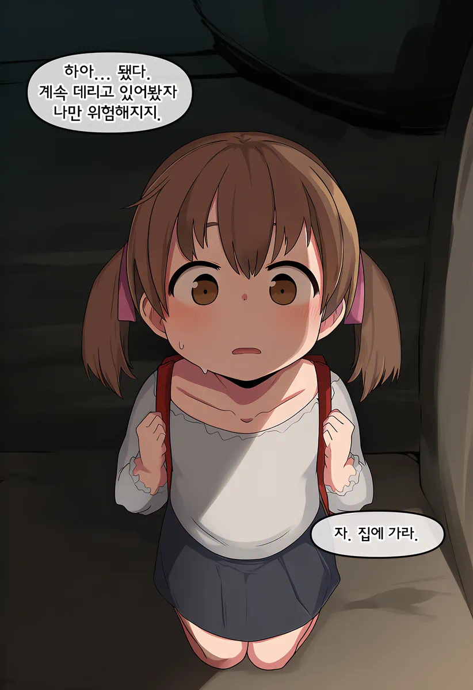
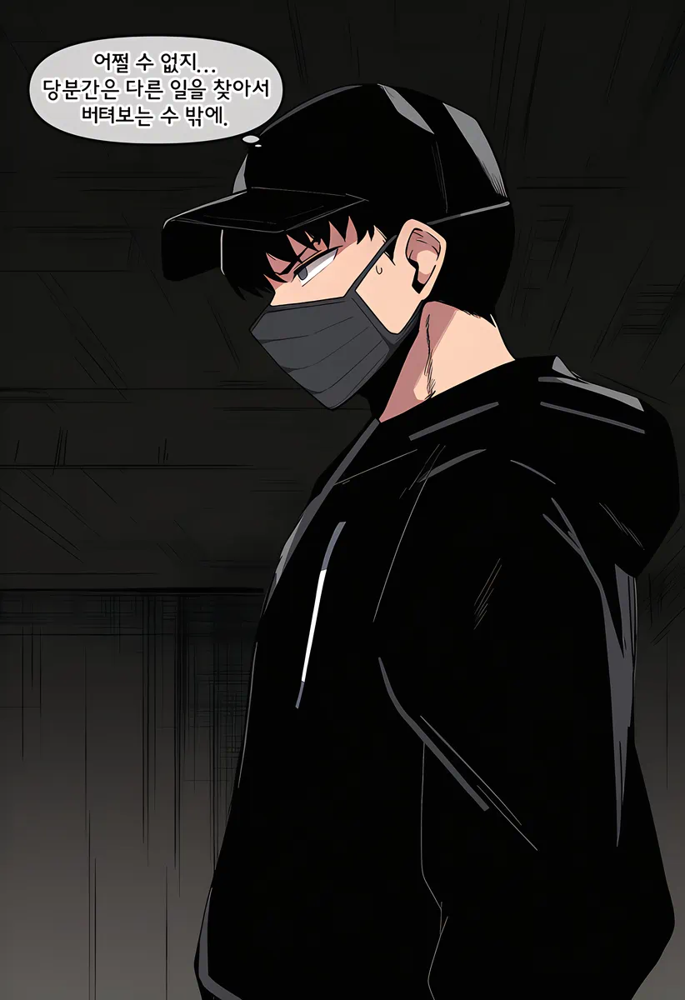
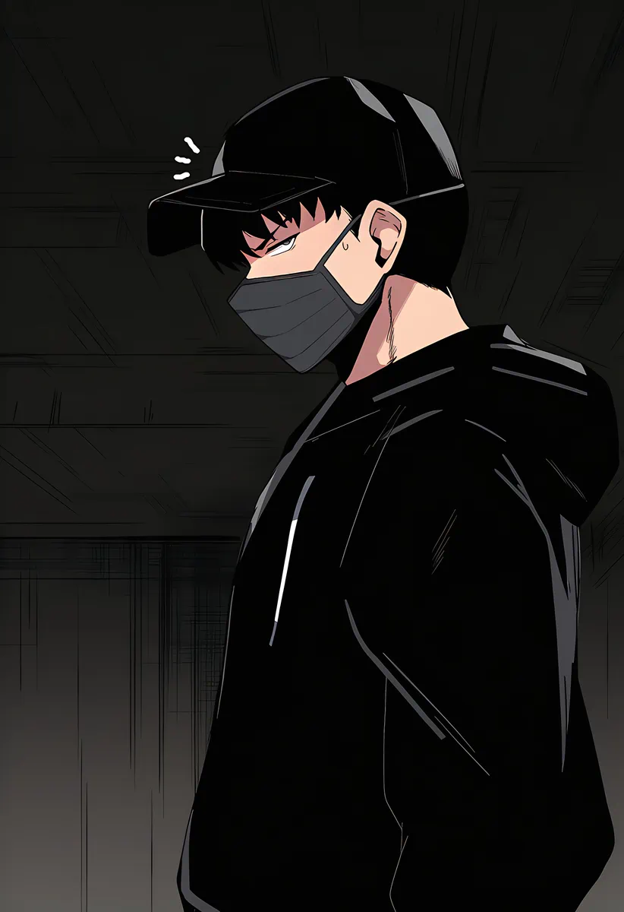
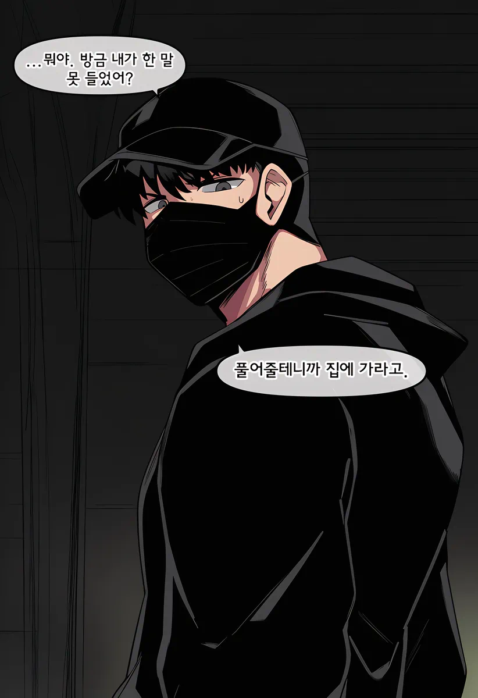
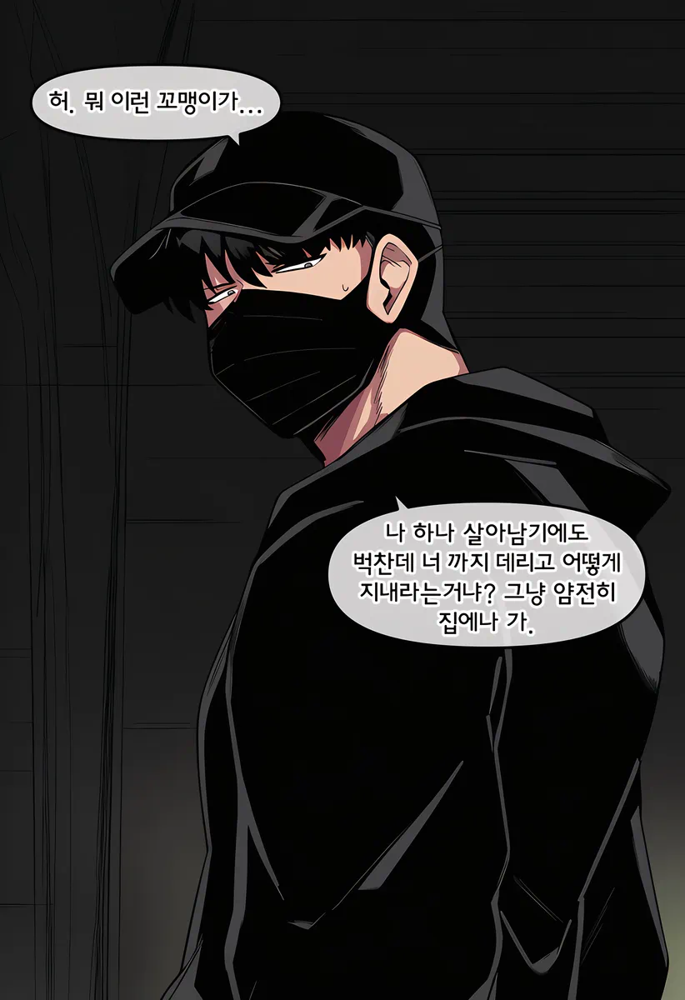
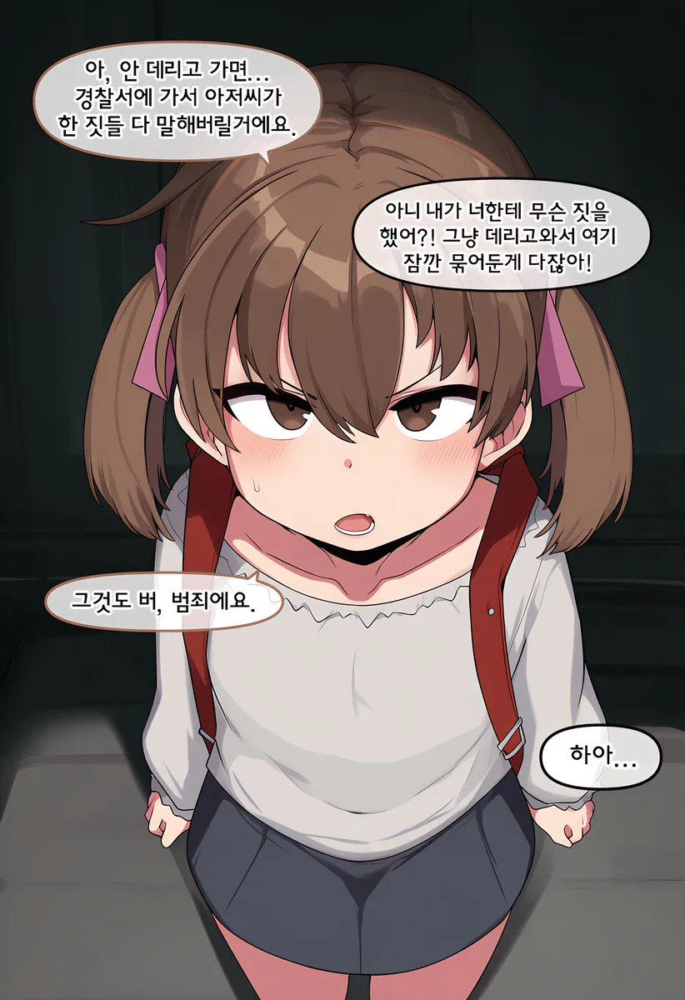
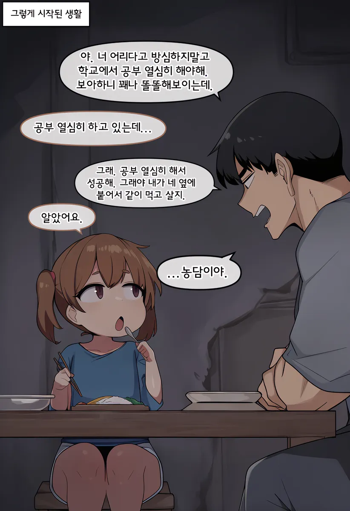
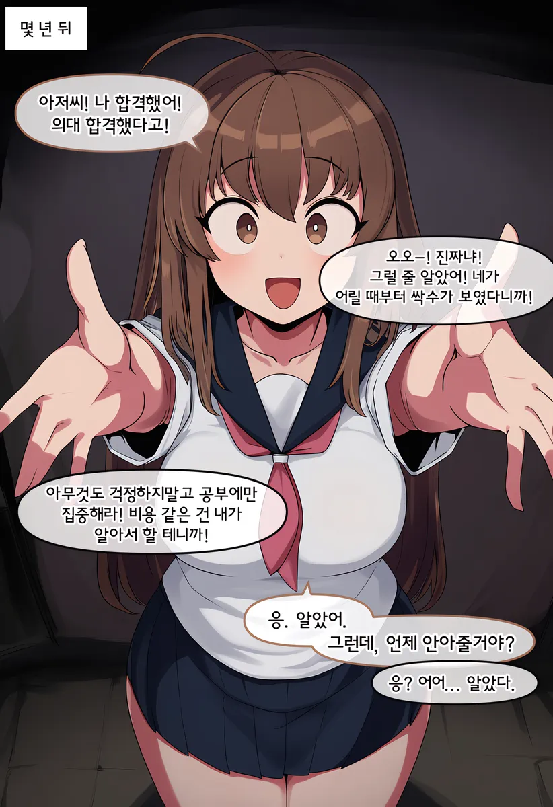
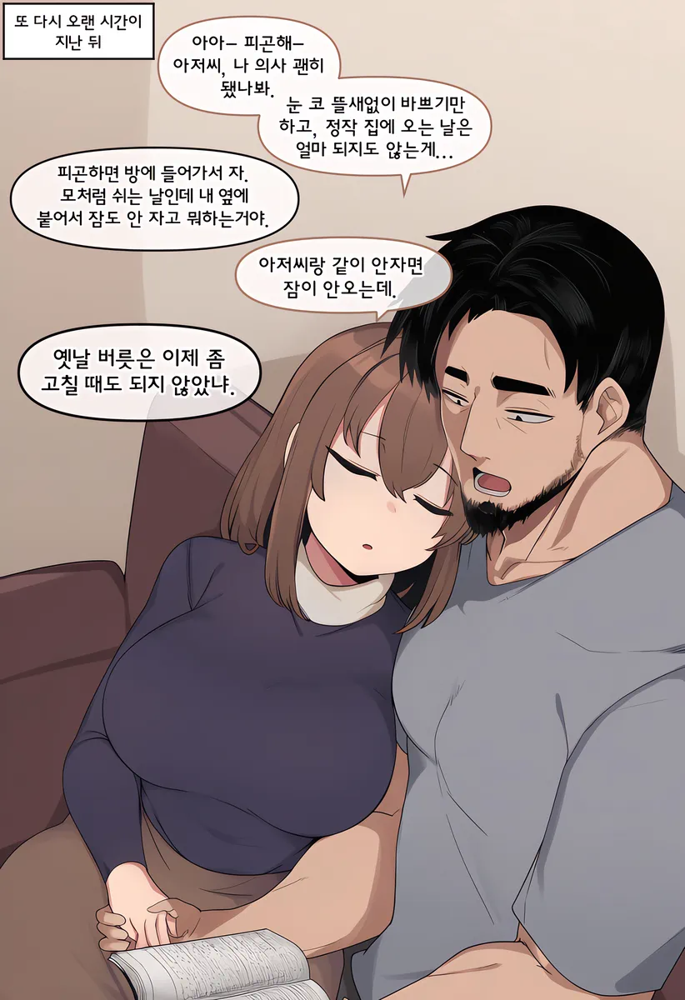
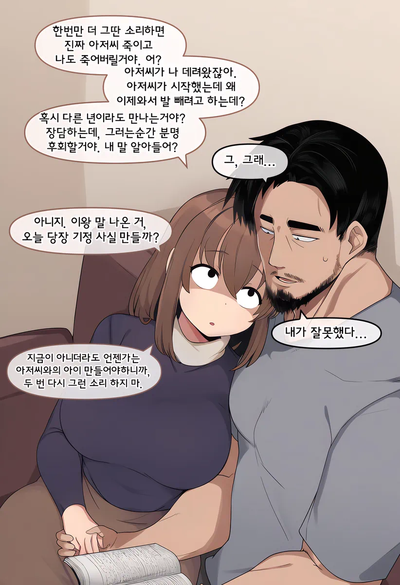














아무리작게잡아도 15~20살..?
피폐집착오지콘 맛있다
예상되는 이후의 전개
애엄마: 뭐 내 딸이 의사가 됬다고? 낳길 잘했네🧡
...뭐? 내 허락도 없이 남자하고 산다고???
수염이 갑자기 생겼네
첫짤보셈
에어가방끈 잡고있음
이 정신나간 글레같은년 일부러 의대를 갔구나
요새 그림 AI발전 많이 했네 ㄷㄷ
순애 .... 순애 맞는거지?
1추가 부족했구나 올라가자 어흐어흐어흐흐흐흫
남자 고추 발기 평생 안 풀리게 보형물 넣어 놨을 듯
지금도 보형물있어 불알쪽 펌프 꾹꾹 누르면
자지가 쑥쑥자람
안 풀리게할 이유가있냐


잘못 잘 키웠네..
우효우효우효우효탁탁탁탁탁탁탁탁탁탁탁탁탁

세워
역키잡
이럴거면 10대때부터 하지 그랬냐
진짜 이딴거보고 히히덕거리는거 역겹네
얼마나 정상 범주에서 벗어났으면 이런거보고 좋아할까 싶다
음침 그자체ㅋㅋㅋ
병신 사이트 다 되어갔다는 뜻임.
보추물 나올 때 부터 눈치 챘어야 하는데..
오해가 있어서 말하는건데
보추, 붕탁물이 이 사이트 근본이야..
붕탁이야말로 개드립의근원이자 근본 시초이자 뿌리인것을... 개드립의 법도가 땅에 떨어졌도다
설레이는 나이차... 아니 몇살차이인거야